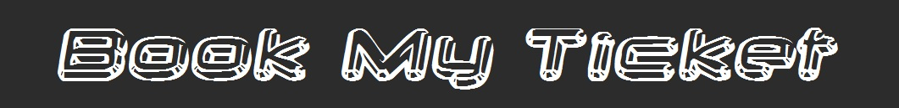
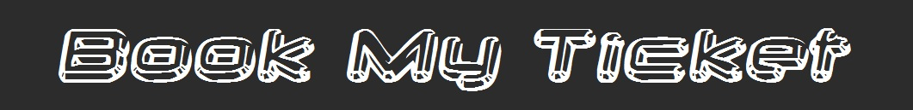

E1 - ALL OF EUROPE
21 Days 20 Hotel Nights
Visit 12 Countries and 30 Major Cities
Spain: Madrid 1N, Barcelona 2N, Monaco: Monte Carlo, Vatican: Vatican City, Italy: Rome 1N,Pisa 1N, Florence 1N, Venice, Padova 1N, Austria: Innsbruck 1N, Wattens, Liechtenstein: Vaduz, Switzerland: Lucerne 3N, Engelberg, Interlaken, Lauterbrunnen, Zurich, Schaffhausen, Germany: Cologne 1N, Titisee, Netherlands (Holland): Amsterdam 1N, Den Hague, Belgium: Brussels 1N, France: Paris 2N, Nice 2N, Cannes, Eze ,England: London 2N, Windsor, Oxford.
Spain
Day 01 : Madrid - City Tour
Arrive at Madrid. City tour Includes Plaza de Espana, Cervantes Statue and Cibeles Fountain.
Day 02 : Madrid - Barcelona
Arrive at Barcelona in the evening. Free time at Barcelona beach front.
Day 03 : Barcelona - City Tour, Flamenco Show
Visit Gaudi's Sagrada Familia Cathedral, Olympic stadium, Theater Platz, colorful La Ramblas, Statue of Christopher Columbus, Tibidabo Hill and a Cable Car Ride. Enjoy the Flamenco show - a wonderful Spanish dance performance.
France
Day 04 : Barcelona - Cannes - Nice
Enjoy orientation tour of Cannes. Arrive at Nice in the evening.
Monaco, France
Day 05 : Nice, City tour - Monte Carlo - Nice
Panoramic city tour of Nice includes Town Hall and Waterfront area. A full day excursion to Monte Carlo. Visit the perfume factory at Eze, the Palace of Prince Rainier - Princess Grace and world's oldest SBM Casino at Monte Carlo.
Italy
Day 06 : Nice - Pisa
Arrive at Pisa. Visit Square of Miracles, Baptistry, Cathedral and Leaning tower of Pisa.
Day 07 : Pisa - Rome
Arrive at Rome. City tour includes Colosseum from inside, Tiber river, Roman Forum, Trevi Fountain and enjoy Time Elevator Ride.
Vatican, Italy
Day 08 : Rome - Vatican - Florence
Visit to Vatican city includes Vatican Museum, Michelangelo's Frescoes, The Last Judgement, Sistine Chapel, St. Peter's Basilica and Michelangelo's famous Pieta. Arrive at Florence. Visit Piazzale Michelangelo Point and Statue of David.
Day 09 : Florence - Venice - Padova
Arrive at Venice. City tour includes Vaporetto water bus ride to Venice Island, Bridge of Sighs, Doge's Palace, Bell Tower, St. Mark's Square, Basilica, Glass blowing factory and Romantic Gondola ride in the famous canals of Venice. Arrive at Padova in the evening.
Austria
Day 10 : Padova - Wattens - Innsbruck
Visit Swarovski Crystal World and Museum at Wattens. In the evening walking tour of Innsbruck includes Inns River, Golden Roof and Maria Theresien Strasse.
Liechtenstein, Switzerland
Day 11 : Innsbruck - Vaduz - Rhine Falls - Zurich - Lucerne
Drive through Vaduz - the Capital of the principality of Liechtenstein. Enjoy the surroundings of Vaduz by Tram ride. Visit Rhine Falls at Schaffhausen (Neuhausen) enjoy Boat ride to the falls. Photo stop at Zurich Lake. Arrive at Lucerne.
Day 12 : Lucerne - Mt. Titlis, Lucerne Dinner Cruise
Excursion to Engelberg - Mt. Titlis. Experience 'Rotair Titlis' - World's 1st Revolving cable car ride to Mt. Titlis and visit Ice Grotto, Thrilling Ice Flyer ride (subject to operation) and Snow sliding. In the evening Lucerne city tour includes Lion Monument and Kappelbrucke Wooden Bridge. Free time for shopping. Enjoy Lake Lucerne dinner cruise with Swiss Folklore music.
Day 13 : Lucerne - Trummelbach - Jungfraujoch - Lucerne
Excursion to Junfraujoch - Top of Europe, en-route visit Trummelbach Glacial Waterfalls. Take a Cogwheel train from Lauterbrunnen to Europe's highest railway station Jungfraujoch Via Kleine Scheidegg station. Visit Ice Palace with Ice sculptures and Sphinx Terrace. Enjoy orientation tour of Interlaken city.
Germany
Day 14 : Lucerne - Titisee - Cologne
Travel through Black forest region, visit Cuckoo clock factory at Drubba, Titisee. Free time for shopping. Arrive at Cologne in the evening, take a photo stop at Cologne Cathedral.
Netherlands (Holland)
Day 15 : Cologne - Amsterdam
Proceed to Den Hague, visit Madurodam - Miniature of Holland. Photo stop at Holland's famous Windmill. Visit Cheese and Clog shoe factory. Enjoy Amsterdam city tour by Canal Cruise.
Belgium
Day 16 : Amsterdam - Brussels
Visit most beautiful Keukenhof - Tulip Gardens (18th March to 16th May). On arrival at Brussels take a photo stop at Atomium followed by walking tour at Grand Place, Town Hall, Guild Houses, Serclaes Monument and Manneken Pis Statue of a little boy.
France
Day 17 : Brussels - Paris: City tour, Cabaret Show
Arrival at Paris. City orientation tour includes Eiffel Tower, Champs Elysees, Place de la Concorde and L'Arc De Triomphe. Enjoy the most fascinating and colorful Cabaret Show in the evening.
Day 18 : Paris - Euro Disney, Shopping, Seine cruise
Experience the excitement at Euro Disney. Enjoy various rides and shows like Honey-I-shrunk the audience, Lion King, It's a Small World, Space Mountain etc. Meet your favorite cartoons like Mickey, Minnie and Donald. Free time for shopping in the evening. Enjoy the Seine river cruise.
England
Day 19 : Paris, Eiffel - London by Eurostar / Euro tunnel, London Eye Ride
Visit the Eiffel Tower Top level to enjoy the panoramic view of Paris. Cross the English channel by Eurostar / Euro tunnel from Paris to London. Arrive at London. Enjoy the British Airways London Eye ride.
Day 20 : London - City Tour, Madame Tussaud's Wax Museum
City tour includes Tower of London Museum to see the Koh-i-noor Diamond, Tower Bridge, 'Changing the Guards' ceremony at Buckingham Palace (subject to operation), Piccadilly Circus, Westminster Abbey, Big Ben, River Thames, Prime Minister's Downing Street, Trafalgar Square, Houses of Parliament, Hyde Park, St. Paul's Cathedral and photograph yourself with the world famous personalities at Madame Tussaud's Wax Museum. Free time for shopping at Oxford street.
Day 21 : London - Oxford - Windsor Departure from London
Visit to the Windsor Castle - the weekend home of the Royal family (subject to operation), followed by a visit to the University of Oxford and Brasenose College. Board the flight for your home town. Tour Concludes.
Meals on Tour :
Day 1 : Dinner
Day 2-20 : Breakfast, Lunch and Dinner
Day 21 : Breakfast and Lunch
Extra Topping :
Tea / Coffee / Soft Drink at water front, Barcelona.
Tea / Coffee during Barcelona to Cannes journey.
Ice Cream at Pisa.
Tea / Coffee at Trevi Fountain, Rome.
Italian Gelato Ice cream at Venice Island.
Tea / Coffee at Swarovski Crystal Museum.
Tea / Coffee at Rhine falls.
Movenpick Ice Cream at Mt. Titlis.
Tea / Coffee during Lucerne city tour.
Tea / Hot chocolate / Coffee at Jungfrau.
Tea / Coffee at Madurodam.
Ice cream at Grand Place, Brussels.
Soft Drink at Euro Disney.
Tea / Coffee at Madame Tussaud's Wax Museum.
Tea / Coffee at Windsor Castle.
Our Speciality :
Variety of lunches include Pizza, Pasta and McDonald's burger at 3 places.
The headset symbol denotes when an excellent audio system will be used to enhance the commentary of the local guide. (Colosseum and Vatican).
Lunch Coupons at Euro Disney.
Caring Tour Escort throughout the tour.
Holiday after Holiday:
London
*** Although we pride ourselves in constantly maintaining our programm the above mentioned programme is subject to change without prior notice. ***
 
